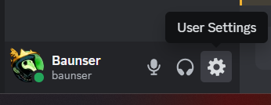
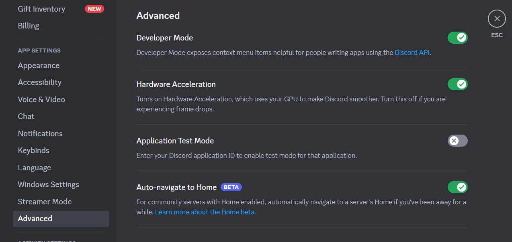
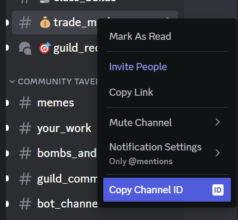

配置：交易日志
机器人已经搭建完成之后：
- 打开开发者模式（如果还没开）：用户设置 →「高级」→ 打开「开发者模式」。


- 复制频道 ID：在频道列表里右键用于记录交易的频道 →「复制频道 ID」。

- 在
config.yml里找到discord-bot → log-trades → channel，粘贴 ID，并把该节的enabled设为true。重启服务器后就会开始记录。
discord-bot:
# ...
log-trades:
enabled: true
# 交易日志频道 ID
channel: '123456789012345678'
交易日志频道同样建议设为只读（只有机器人能发消息），避免被聊天刷掉。